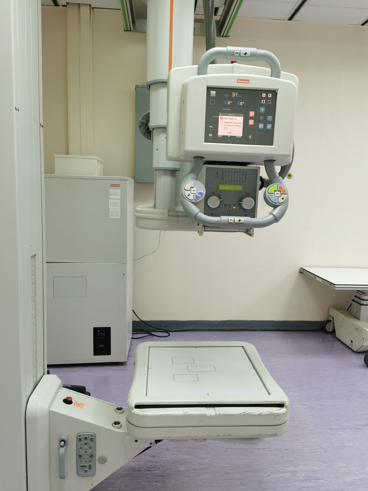

Radiography is the study and use of x-ray and other imaging equipment to take pictures(radiographs) of inside the body.
-Radiography instituteRadiography is regarded as the eye of medicine.
There are numerous specialty in radiography, and we will be focusing only on those specialization that makes use of radiation.

These are the basic general x-ray machine that is usually found in any medical facility providing diagnostic imaging services.
It is a versatile piece of equipment and usually a first point of call imaging modality.
it is useful for the diagnosis for many chest conditions, trauma injuries excluding head injury, abdominal condition,assessment of ostearthritis and other health ailment as recommended and justified by the medical team.